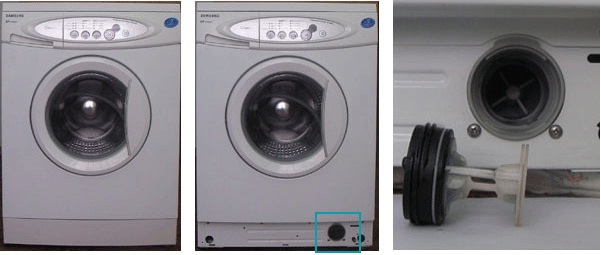

СТИРАЛЬНАЯ МАШИНА ПОСТОЯННО НАБИРАЕТ И СЛИВАЕТ ВОДУ?
Звоните сейчас!
 +7 495 642-53-77
+7 495 642-53-7725% скидка при онлайн-заявке с 18:00 до 9:00
Работаем ежедневно с 8:00 до 24:00
Или оставьте
онлайн-заявку
на обратный звонок
(скидка 15%)
Мастер свяжется с вами
через 15 секунд
Отзывы
- Добрый день. Стиральная машина Индезит IWSC 5085 при запуске начинает набирать воду, через секунд 20 сливает, начинает моргать весь горизонтальный ряд индикаторов. В чём проблема, может кто-то сталкивался с этим? Хотел бы починить сам.
- Обычно у этой машинки слетает прошивка... Проверьте питание +5V и +12V, все симисторы, ТЭН, двигатель и прогоните тест...
- Заменил модуль от Индезит 83, машина работает, даже лучше. Родной модуль отдал на проверку. Скорей всего Вы правы, слёт прошивки. Спасибо!
Установили машинку, всё правильно подключили. Но стиральная машина набирает воду и тут же сливает, и так постоянно. Пробовали - отжим отдельно работает. А программы стирок ни одна не работает. Что делать? Позвонили в "Bosch сервис" (Москва). Приехал мастер - снял верхнюю крышку. Оказалось, как потом мне показал мастер, слетел со своего места датчик (круглый) с подходившей к нему трубкой. Как я понял, он срабатывает при наборе воды в бак. Создавшееся давление в трубке и в датчике соответственно замыкают, размыкают контакты и отключают клапан набора воды. Так вот от вибрации перетерлась эта трубочка о противовес. Он заменил эту трубку и все заработало. Профессиональная работа. Спасибо, ребята!
Как всегда в самый "неподходящий" момент (собирались в отпуск) сломалась стиральная машина. Через Интернет нашёл фирму (Бош Сервис), утром позвонил - объяснил проблему, там всё поняли, приняли заказ. Приехали через 2,5 часа в Подмосковье (20 км от МКАД), и через 40 минут стиральная машина уже работала. Отличный и быстрый сервис !!! Все бы так работали. Спасибо всему персоналу компании BOSCH Сервис Москва! Счастья и удачи Вам!
Ремонтируем:

Уже сегодня Ваша стиральная
машинка будет работать
Стоимость работ и
запчастей, объявленная
до начала ремонта,
не подлежит изменению
24 месяца
гарантия на
выполненную
работу
Постоянно набирает и сливает воду?
Такой непомерный «аппетит» вашей стиральной машинки может говорить либо о неверной установке агрегата, либо о возникшей неисправности. В любом случае – проблема требует устранения. В противном случае – как минимум вы получите некачественную стирку при огромном расходе воды, как максимум – можете окончательно «доломать» стиралку, затопив в придачу соседей. Согласитесь, перспектива не из радужных.
Итак, если стиральная машинка только установлена, речь может идти о неправильном подключении к канализации. Когда сливной шланг находится ниже уровня бака, вода самотеком уходит в канализацию. Машинка «понимает», что воды не хватает, и начинает ее заливать вновь. В свою очередь и новая порция воды уходит тем же путем…
Проверка корректности подключения стиральной машины
Впрочем, возможен вариант, когда увидеть место соединения невозможно - мешает «экран» на ванной, шкафчик, выступ на стене и т.п. В этом случае проведите простой тест: запустите стиральную машинку и подождите, пока бак не наполнится водой. Затем включите «слив» и в процессе убывания воды нажмите «паузу». Теперь внимательно проследите за уровнем оставшейся воды: если на паузе слив прекратился – все в норме. Если же вода продолжает убывать (это видно, а порой и слышно по характерному журчанию в трубах) – значит, проблема с подключением есть. На этом этапе рекомендуем отложить стирку и вызвать мастера, который установит стиралку корректно.
Если же машинка прописалась у вас сто лет назад, и столько же работала нормально, но вдруг начала просить непомерно много воды – значит, проблема «внутренняя». Что-то сломалось. В этом случае выключите машинку из сети, перекройте шланг подачи воды и слейте воду при помощи дополнительного сливного фильтра.

После чего вызовите специалиста по ремонту стиральных машин.
Поломки, при которых стиралка набирает и сливает воду
| Поломка | В чем проблема | Стоимость ремонта |
| Неисправность датчика уровня воды. | Возможно, вышел из строя датчик уровня воды (прессостат). Он определяет, сколько воды в баке и необходимо ли давать команду впускному клапану на залив. Состояние заполненности машинки прессостат определяет по давлению водяного столба. Из-за накипи, осадка и другого мелкого мусора напорная трубка датчика может засориться, и прессостат будет давать «мозгу» машинки неверную информацию. Кроме того, могут подвести затворы и шланги прессостата: в случае, если возник засор или имеет место утечка воздуха – датчик также будет выдавать ошибочные данные. Как следствие – машинка будет постоянно наливать воду. В любом случае, необходима тщательная диагностика и ремонт или замена датчика уровня воды. |
от 1400 р. |
| Неисправность впускного клапана. | Некорректно работает впускной клапан, который отвечает за подачу воды. Возможно, клапан вышел из строя и в принципе не перекрывает воду, а быть может, ослабла лишь мембрана – из-за чего вода просачивается даже в по факту закрытом состоянии. Необходима замена клапана. |
от 1200 р. |
Неисправности стиральных машин
bosch-service-moscow.ru
Москва, Старая площадь, 6/7, строение 2.
Телефон (+7 495) 642-53-77
Cбереги время и нервы. Вызови мастера!
наверх для заказа обратного звонка
сломалась?
починим!